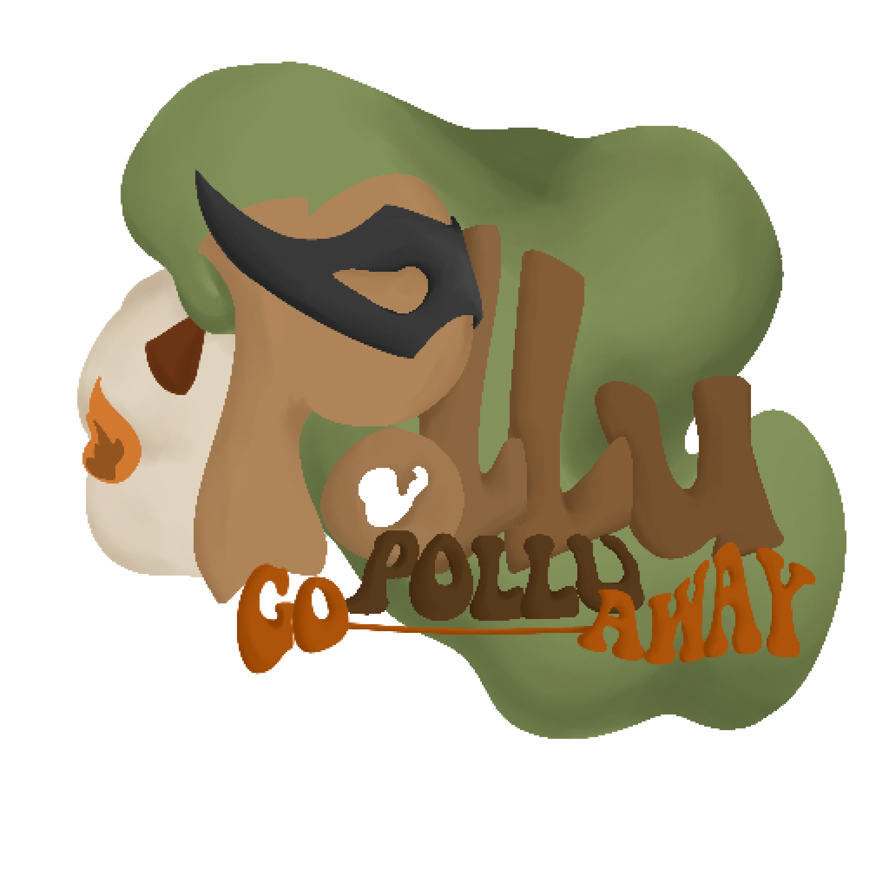

Greenduce
Greenduce adalah program yang ingin kita realisasikan pada anak-anak muda serta orang tua yang masih tidak mempedulikan dampak negatif dari polusi serta dari game "Polu-Polu Go Away." Ini akan mengajarkan bahwa betapa bahayanya polusi udara bagi keberlangsungan hidup manusia di bumi, karena polusi akan terus bertambah jika tidak di atasi secepatnya nah solusi yang kami berikan pada aplikasi ini.